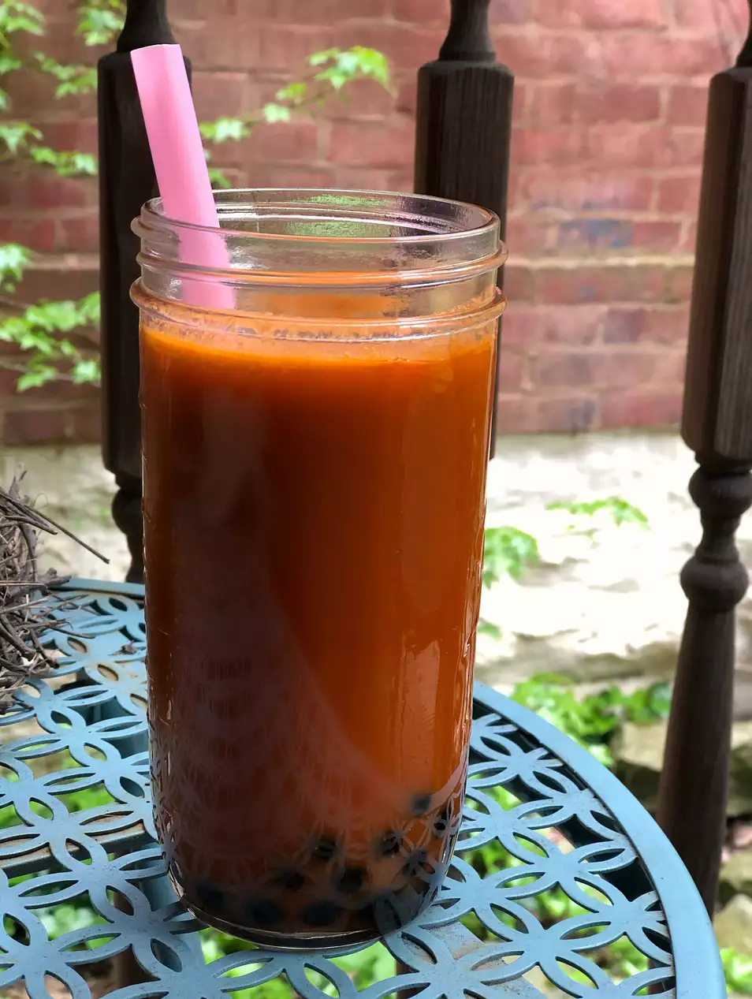

Thai Tea

Description
This is the perfect Thai iced tea recipe! Find Thai tea leaves at any Asian market. It's so easy to make this refreshing drink...be careful, you may become critical of your favorite Thai restaurant's concoction because you can do it better. Some Thai tea mixes have food coloring in them to make them bright orange and some are labeled as "Thai tea powder", so making it from scratch gives you the best flavor.
Ingredients
- 2 tablespoons Thai tea leaves, or more to taste
- 4 cups of water
- 2/3 cup of white sugar, or to taste
- 1/2 cup of coconut milk
Steps
- Place tea leaves in a tea filter bag and secure.
- Pour water into a pot and bring to a boil. Add tea bag and sugar. Return to a boil and stir until sugar has dissolved, about 3 minutes. Remove from heat and allow tea to steep for 30 minutes.
- Discard tea bag. Let tea cool to room temperature. Refrigerate for 3 to 4 hours, or overnight.
- Fill 2 glasses 2/3 full of chilled tea. Slowly pour 1/4 cup coconut milk into each glass.